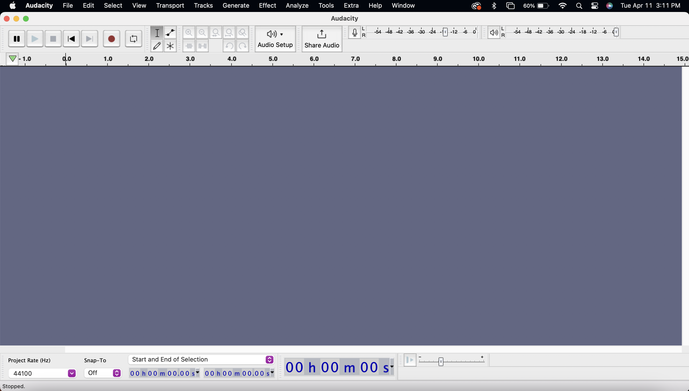

Audacity
Introduction to Recording and Editing Audio
Introduction
About This Class
Audacity is an open source, free and easy to use audio editor and recorder. It includes powerful audio post-production tools to help create professional podcasts and music.
This class introduces the basic concepts and interface of Audacity. By the end of the class, you will gather basic knowledge of how to import, record, edit and export your audio project with Audacity. Some more advanced editing tools will also be mentioned such as auto duck and noise reduction. You will also have the opportunity to record or use our excercise file to create your own podcast. We encourage you explore Audacity's other advanced features that are briefly mentioned at the end of this class.
Download Audacity

Go to www.audacityteam.org and download the newest version of Audacity. The version we use for this class is Audacity 2.2.2. Then install Audacity by following the basic procedure of your computer operating system.
Download the Class Files
From the STS Canvas Course Homepage, download the Class Files for Audacity. These will help you complete the exercise below!
Navigating the Workspace
When you open Audacity, it will automatically create a new project for you. If you want to create an additional new project, go to File > New

Import Audio
Let's go ahead and import some audio! There are two ways to do this:
-
Navigate to File > Open... to import your audio file. If you want to import multiple audio files, this will create an new individual project for each audio file.
-
Navigate to File > Import > Audio... to import your audio file. If you want to import multiple audio files, this will import all of them into your current existing project.
For this exercise, let's use File > Import > Audio... to import the voiceover file and melodyloops-season-of-joy file from our downloaded Class Files into the same project.
Audacity will prompt you how do you want to import your audio, we recommand you choose Make a copy of the files before editing (safer). Audacity will keep the original files untouched so that you have a backup if anything goes wrong. Click OK once you have made your selection.
Recording Audio
The other way to gather audio is to record it yourself directly in Audacity! To do this, make sure you have access to a microphone or a computer with an internal microphone (such as Mac laptops). Let's start recording by following these easy steps:
First, test your microphone level
-
Find the microphone level bar at the top right of the interface, and click to start monitoring.
- Speak in your normal speaking voice to test the level, make sure your sound level locates at about -6 dB. This level helps prevent audio to go over 0 dB which often results in audio distortion, something that cannot be fixed in post production
-
If your mic level is too low or too high, or cannot see the shifting green bar, you can change your voice volume, or adjust the microphone sensibilit on the top left.

Start Recording
Choose the type of the microphone you want to use for recording. In this case, I am using the Internal Microphone directly from my laptop.

Basic Audio Editing
Deleting Audio
To delete a part of the audio file, select the part of the audio you want to delete using the Selection Tool. Press backspace or delete to erase the selected audio.
The Edit Menu
The Edit Menu includes basic tools to edit your audio.
- Use the Selection Tool to highlight the audio you want to modify
- Choose an option from the Edit menu. Some common Edit Menu Options include Cut, Delete, Copy, and Paste.
Duplicate
This option allows a selected audio to be copied onto a new track within a project.
Remove Special
- Remove Special > Silence Audio: replaces the selected audio with complete silence
- Remove Special > Trim Audio: deletes all audio except the selection
Clip Boundaries
- Edit > Clip Boundaries > Split: Seperates (splits) the selected audio clip from the rest of the audio on that track
- Edit > Clip Boundaries > Split New: Moves the selected audio clip from its original track onto a new track
- Edit > Clip Boundaries > Join: Groups seperate audio clips on the same track into one continuous clip. Use the Selection Tool to highlight multiple clips and then click Join. Notice that Audacity will connect the two clips by adding a duration of complete silence. You can drag the audio clips to join each other to avoid any complete silence.
Fade In and Fade Out
Audio Effects
Audacity includes many audio effects for more advanced audio editing. To apply an effect, first use the Selection Tool to highlight the area of the audio you want to modify. Then, from the Effect Menu, select an effect option to add to the selected audio.
Basic Audio Effects
- Effect > Amplify...: Increases or decreases the volume of the selected audio
- Effect > Change Speed...: Increases or decreases the speed of the selected audio , affecting the pitch in the process
- Effect > Change Pitch...: Changes the degree of highness or lowness of the tone in the selected audio
- Effect > Change Tempo...: Changes the speed at which the selected audio is played without affecting the pitch
- Effect > Fade In/Fade Out...: In addition to the Fade Tool, you can also use this effect to automatically fade the audio
Advanced Audio Effects
There are many powerful audio effects in Audacity. This section will mainly focus on how to use the Noise Reduction Effect and Auto Duck Effect.
Noise Reduction
-
Record your own audio, or import the noise-reduction.wav file from the downloaded Class Files into your project
-
Use the Selection Tool to highlight some "empty" space between words within the recorded speech. This selection will be the reference point for Audacity to know what noise to filter out once we apply the effect.
-
Go to Effect > Noise Reduction... and click Get Noise Profile

-
Using the Selection Tool, highlight all of the audio you want to reduce background noise from, and go to Effect > Noise Reduction again
-
Increase the Noise reduction (dB) to filter out more background noise. Keep in mind that if you choose to filter out too much noise, the audio might become distorted. Always make sure to Preview your effect before hitting OK
Before Noise Reduction:

After Noise Reduction:

Auto Duck
Auto Duck is an especially useful effect for podcasting. The effect reduces (ducks) the volume of one or more selected tracks automatically whenever the volume of a single unselected "control track " placed underneath reaches a particular threshold level. For example, you can have the volume of the track with background music reduce once the track with a voiceover is introduced at a certain volume.
-
Import the music file melodyloops-season-of-joy.mp3 and voiceover.wav file. Make sure the music file is on the track above the track of the voiceover file. If not, click on the small triangle next to the audio name, and choose Move Track Down

-
Using the Selection Tool, highlight the entire music file and go to Effect > Auto Duck
-
Adjust the Duck amount and outer and inner fade up/fade down length. The lower the dB of the Duck amount, the lower the volume of the music will be once the voiceover appears. The Outer fade down/up length is the amount of time it takes to gradually fade the music out or in before the voice audio enters. The inner fade down/up length is the amount of time given to continue the fade after the voice audio enters. Remeber to always Preview your edits before clicking OK.

-
Press OK once you're done. Below is an example of a music file before and after the Auto Duck Effect:
BEFORE AUTO DUCK:

AFTER AUTO DUCK:

Saving and Exporting
When you finish working with your audio files, you have several options for saving and exporting your files.
Save as Audacity Project
Saving as an Audacity project allows you to open the project later and add further changes to your audio. The information of your multiple tracks will be saved into the project. This is the best option if you want to continue editing in Audacity. Note that this project is only compatible with Audacity, meaning you won't be able to share your creation with people who don't have Audacity downloaded onto the computer they want to open your project from.
-
Go to File > Save Project...
-
Choose a folder to save your project in. The default folder is named Audacity and is usually placed under Documents.
-
Give your project an appropriate File Name so that it is easier to locate later in case you forget the folder it's saved in.
-
Click Save to save your project as a .aup file
Export as WAV File
export > export as wav">
If you want to export your file to a compatible format, and you want to keep the best quality of your audio, export your audio as .wav (Waveform Audio File Format) file format. This file format is commonly used for uncompressed audio files and is compatible with most media players. It is also a larger file size compared to other formats.
-
Go to File > Export > Export as WAV
-
Choose a folder to save your project in. The default folder is named Audacity and is usually placed under Documents.
-
Give your project an appropriate File Name so that it is easier to locate later in case you forget the folder it's saved in.
- Choose Save as type as either WAV (Microsoft) signed 16-bit PCM or WAV (Microsoft) signed 32-bit Float PCM and click Save.
- Audacity will prompt you to enter metadata for the audio. Complete the form to the best of your ability and click OK.
Export as MP3 File
If you want your audio files to have relatively good quality and smaller file size, export your audio as a .mp3 file. In order to export .mp3 files with Audacity, you will need to download a free MP3 encouder called lame.lib.
Download Lame For Windows
- Go to lame.buanzo.org/#lamewindl
- Click the link Lame v3.99.3 for Windows.exe to download the file.
- Click the downloaded file to open it and follow the simple instructions to install Lame.
Download Lame For Mac
- Go to lame.buanzo.org/#lameosxdl
- Click on the link Lame_Library_v3.99.5_for_Audacity_on_macOS.dmg to download the file.
- Click the downloaded file to open it and follow the simple instructions to install Lame.
Instructions to Export as MP3 File
-
Go to File > Export > Export as MP3
-
Choose a folder to save your project in. The default folder is named Audacity and is usually placed under Documents.
-
Give your project an appropriate File Name so that it is easier to locate later in case you forget the folder it's saved in.
- For the Format Options, usually the default will do the job
- Audacity will prompt you to enter metadata for the audio. Complete the form to the best of your ability and click OK.